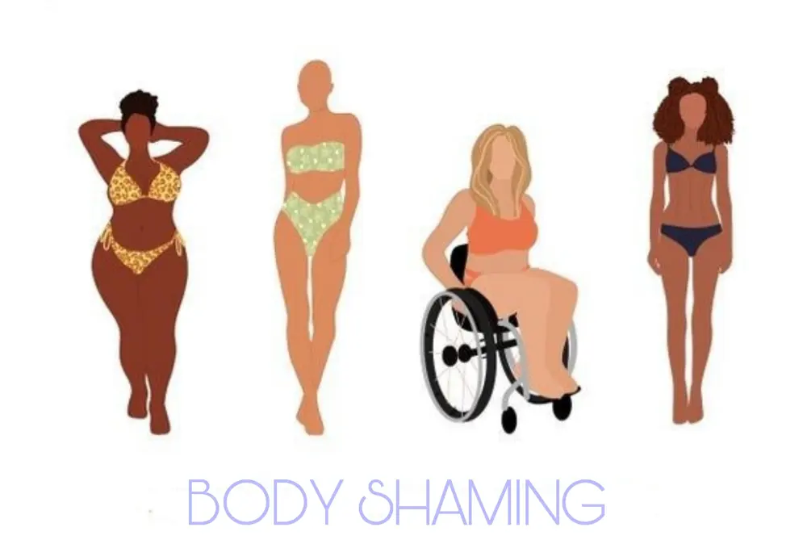
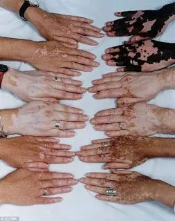
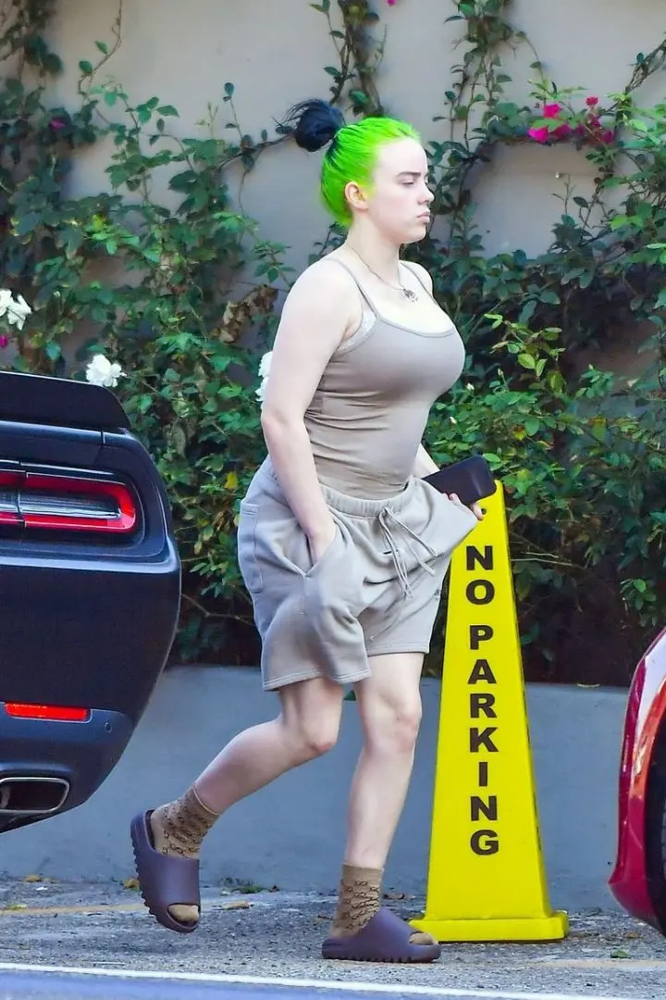

Il body shaming

Il termine body shaming letteralmente tradotto 'corpo vergognoso'.
Che il bullismo sia sempre esistito questo si sa da secoli, ma quello che ormai si sta diffondendo online è una cosa ancor più grave.
È una forma di bullismo, forse una delle più diffuse oggigiorno, di chi subisce violenze psicologiche sul proprio aspetto fisico attraverso commenti e messaggi offensivi tramite web e social.
Una persecuzione che non finisce più quando chiudi la porta di casa, ma che può protarsi 24 ore su 24 tramite commenti, messaggi, sms.

Qualsiasi caratteristica fisica può essere presa di mira dai bulli:
Non per forza solo per qualche chilo in più ma anche per l'altezza, la bassezza, la magrezza, la cellulite, la pancetta, disturbi considerati antiestetici ad esempio acne, tatuaggi eccessivi, peluria, addirittura colore dei capelli.
Insomma, tutto ciò che non rientra nei canoni estetici della società.
Nel ventunesimo secolo quasi, purtroppo, sì, esistono ancora tantissime forme di bullismo e violenza.
Si pensa che sia proprio del mondo femminile e invece anche gli uomini ne subiscono gli effetti, seppur sicuramente in forma minore.
I PRIMI AD ESSERE COLPITI DA BODY SHAMING SONO I PERSONAGGI FAMOSI.

I personaggi famosi sono senz'altro i soggetti più colpiti, basti vedere i commenti poco lusinghieri che ricevono.
Moltissimi personaggi famosi soffrono di queste offese gratuite (body shaming) come ad esempio Billie Eilish, che proprio per questo ha deciso di non usare i social e di concentrarsi sul lavoro in quanto le procuravano ansie.
Anche se tutto questo non si è fermato, infatti, proprio pochi giorni fa, è stata di nuovo attaccata dagli haters poiché paparazzata con pantaloncini corti ove si vedeva il suo aspetto fisico.
Altri invece, fingono di non leggere; tantissimi altri personaggi, non subiscono le offese ma ne traggono forza per sentirsi più determinati e combattere questo tipo di odio verso gli altri, con campagne di sensibilizzazioni.
Ma attenzione, non è detto che questa forma di violenza psicologica non possa essere praticata anche tra le persone comuni, anzi..
io penso che in questo caso sia più grave, in quanto vengono colpite persone che magari già soffrono del proprio aspetto fisico o di un disturbo e, ricevendo tali offese, possono entrare in un tunnel senza fine.
È così che poi possono verificarsi vere e proprie tragedie silenziose, quali: depressione, bulimia, anoressia, autolesionismo, ecc ecc.
IL BODY SHAMING È UN REATO?
Sì, in alcuni casi il body shaming può divenire reato.
Ad esempio, in base al comportamento dell'autore di cui abbiamo parlato sopra, potrebbe essere chiamato a rispondere dei reati di diffamazione (anche aggravata, se l'offesa è perpetrata attraverso i social network) o per stalking.
E come abbiamo già accennato, può provocare gravi danni verso la vittima.
Talvolta anche indurre la vittima in un istrigazione al suicidio.
Dunque, chi è perseguitato da body shaming, non deve mai sottovalutare la cosa e subire tali attacchi ma deve avere il coraggio di denunciare, magari con l'aiuto di un amico, un familiare o chiunque vi ispira fiducia.
Spero che questo è articolo vi abbia dato informazioni utili e mi raccomando, abbiate sempre il coraggio di ribellarvi!